By appointment
Tattoo
Custom pieces in fine line, freehand, body flow, realism and black & grey. Booked by DM, designed around your story.
From€100
Tattoo studio & art space · Pink Street, Lisbon
Fine line, freehand and body-flow tattoos, drawn directly on the skin. Permanent makeup, laser removal and scar camouflage in the same studio, on the fourth floor of Pink Street.
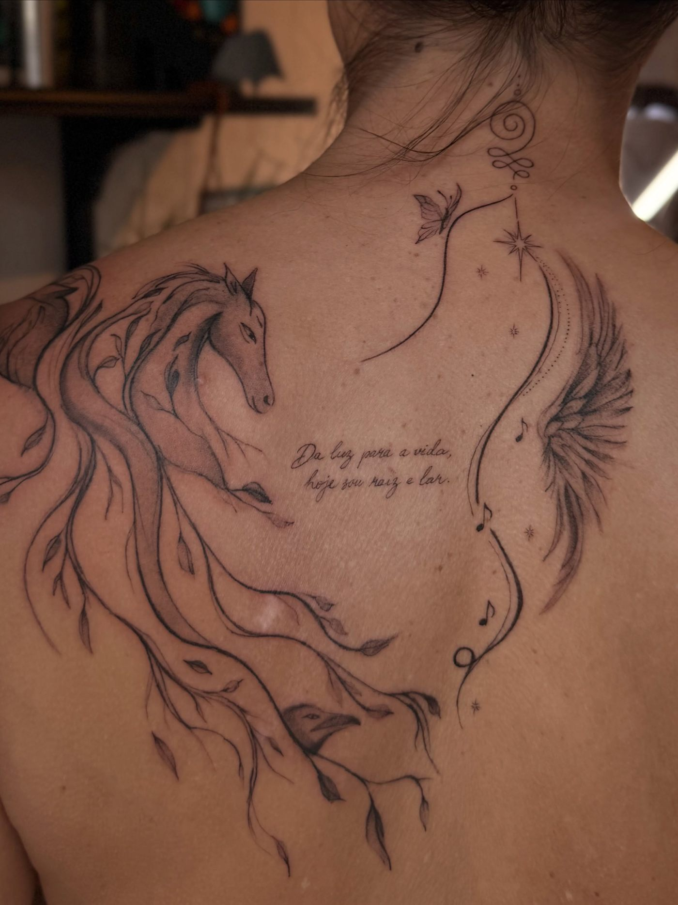
Fine line horse · Olesia · Lisbon, 2026
The approach
Part of every freehand design is sketched straight onto the skin, following proportions, muscles and the way you move. The concept is agreed before the session. The final lines happen in it.
Tell us the story, the placement and the size. Reference images help, but a rough idea is enough to start.
The design is sketched freehand on the body and adjusted until it sits right with how you stand and move.
Session with quality materials and full preparation. Water, coffee and something to eat for the longer ones.
The studio
Skinlines Art Space opened on 1 May 2026 on Pink Street, in Cais do Sodré. The name joins the lines drawn on skin with the lines of the body. Artists from different countries tattoo here, and the studio hosts sketch club nights with a live model and acrylic painting sessions.
Sketch club, painting sessions, guest residencies and exhibitions. Dates are announced on Instagram.
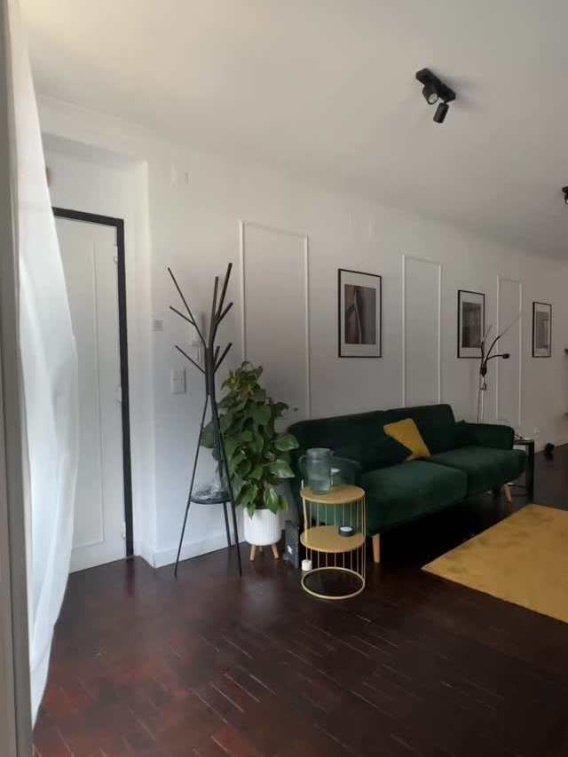
The work
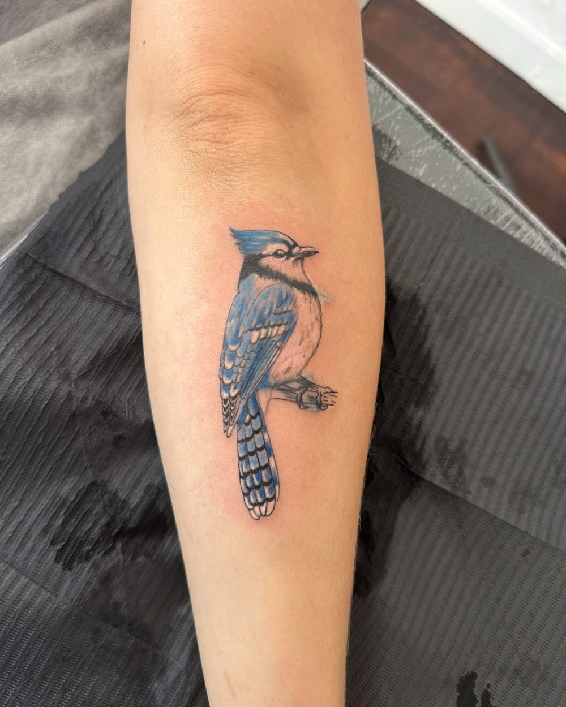
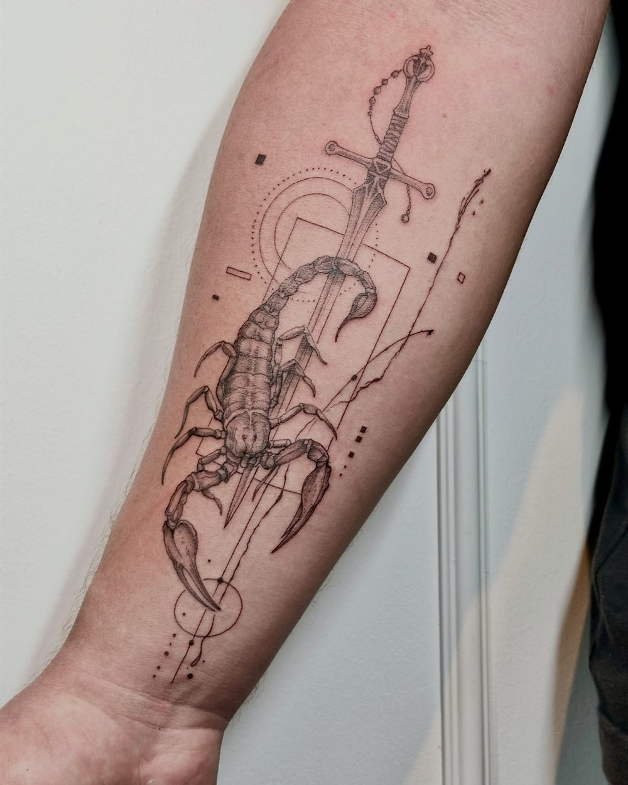
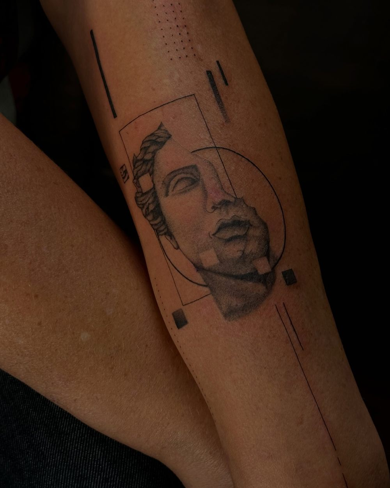
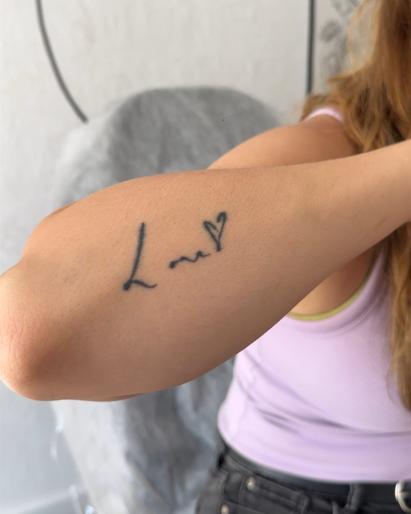
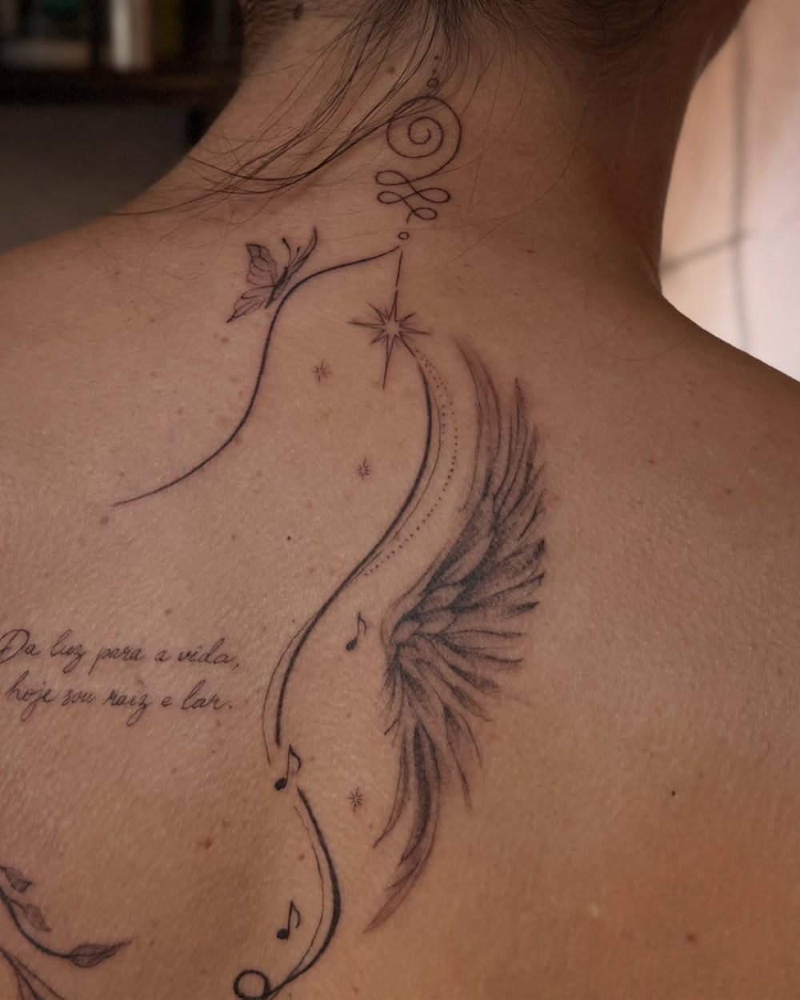
Thin, precise lines. Small symbols, lettering, botanical motifs and delicate custom pieces.
SignatureDrawn straight onto the skin, no stencil. The design adapts to you, not the other way round.
OlesiaAbstract, fluid compositions that follow the shape and movement of the body. One of a kind.
Never repeatedLifelike detail, from portraits to animals and objects, by the studio's realism artists.
Resident artistsDepth built with shading, light and shadow.
Light & shadowWords, dates and plants, mostly in fine line. The most requested small pieces.
Most requestedServices
By appointment
Custom pieces in fine line, freehand, body flow, realism and black & grey. Booked by DM, designed around your story.
Selected weekends
Walk in, pick a small design from the sheet and leave with it the same day. Dates on Instagram.
Beauty
Natural-looking permanent makeup, matched to your features and skin tone.
Correction
Fading or removing older tattoos, in sessions spaced so the skin can recover between them.
Paramedical
Pigments matched to your skin tone to soften scars and vitiligo. The work that started the studio.
Not sure where to start?
Send a message with your idea, placement and a photo of the area. We answer with a quote and the next free dates.
Book via DMStarting prices. The final quote comes after a short consultation by message.
Artists
Founder · fine line · freehand · body flow · paramedical
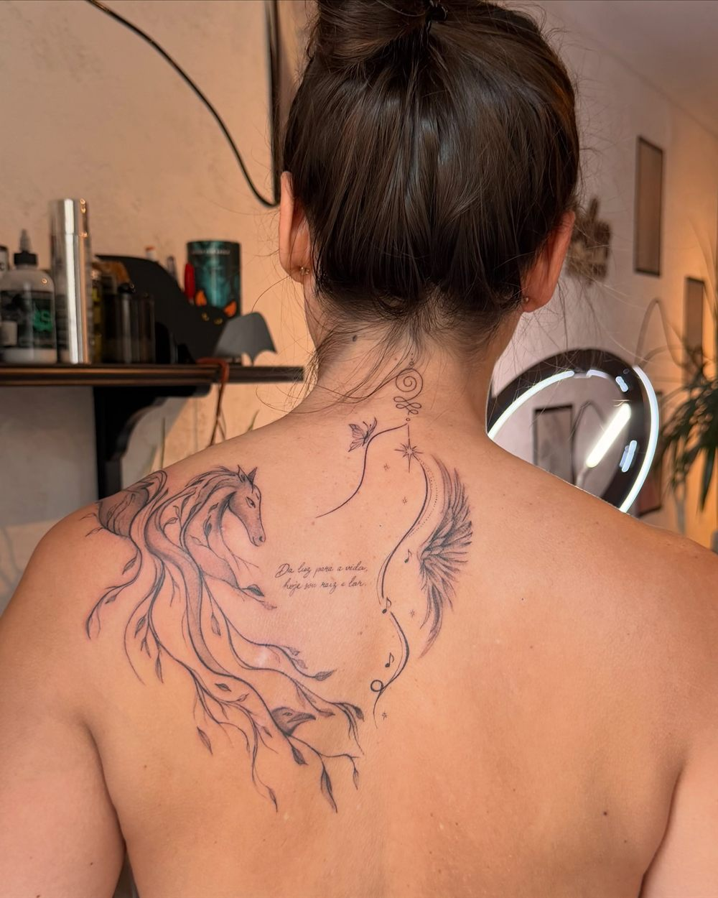
Ukrainian tattoo artist, in Lisbon since 2023. Olesia came to tattooing through a question: could a relative's surgical scar be made less visible? She taught herself artistic tattooing, then trained in paramedical work with a mentor.
Her own style grew toward fine line, minimalism, abstraction and pieces that move with the body. Camouflage of scars and vitiligo is still the work she calls the most important.
@olesya_tattoo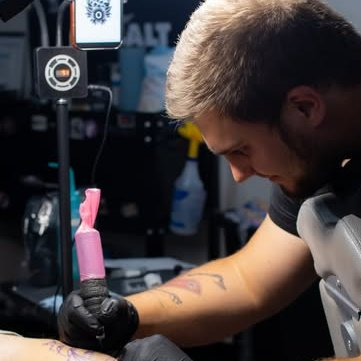
Artist at Skinlines
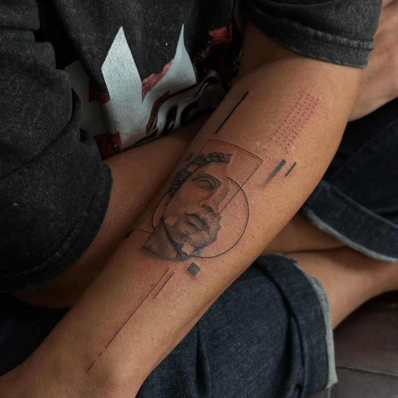
Artist at Skinlines
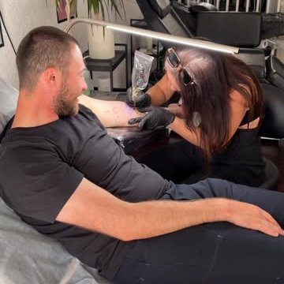
Artist at Skinlines
Guest artists
Skinlines welcomes guest artists from any country for short residencies on Pink Street.
Apply by DM →In the press
No novo estúdio de Lisboa, Olesia faz tatuagens desenhadas diretamente no corpo
NiT · 2026
Read the feature
On a normal day you hear several languages in the room. Clients come from across Europe and the US, and the guest list already includes Benfica and Ukraine goalkeeper Anatoliy Trubin, tattooed by a visiting artist from Kyiv.
Visit
Cais do Sodré, two minutes from the metro and the train to Cascais. Ring the bell for the fourth floor.
Send a DM on Instagram or a WhatsApp with your idea and the area. Walk-ins are welcome on flash days.